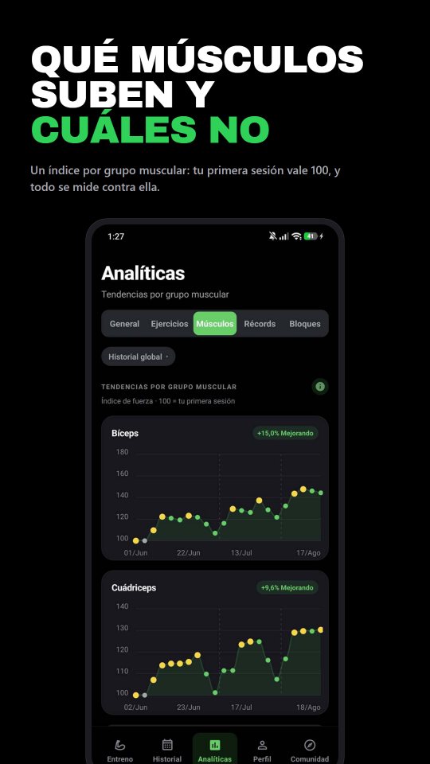
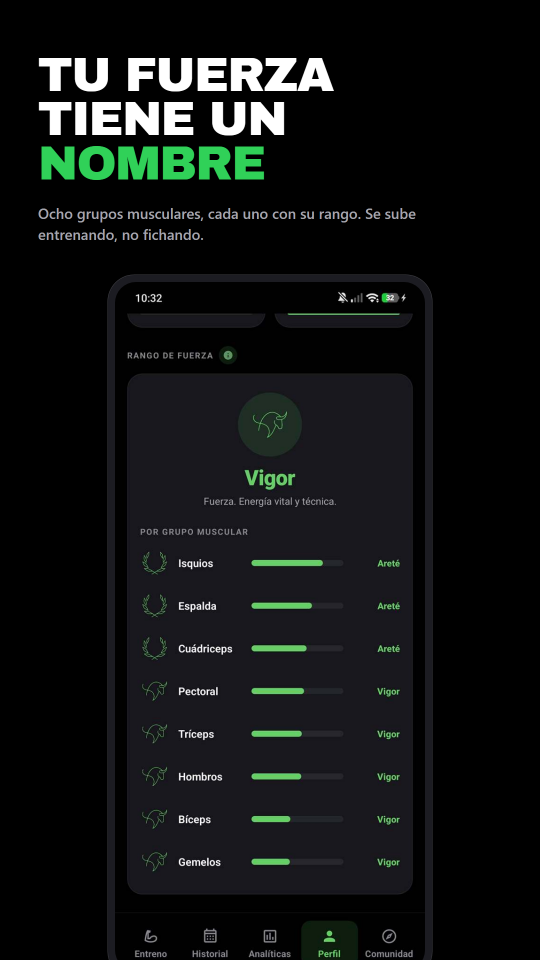

Registro de entrenamiento · Android
El gimnasio en serio,
sin hojas de cálculo
Apunta la sesión, sigue el bloque y comprueba si los números se están moviendo de verdad.
Gratis · Suscripción opcional · Español e inglés

En la sesión
Dos toques
por serie
Cada serie llega con su peso, sus repeticiones y lo que levantaste la última vez. En RIR o RPE, con superseries, drop sets, rest-pause y un temporizador de descanso que sigue corriendo con la pantalla apagada.

Periodización
El plan se ajusta
a lo que levantas
De tres a cinco semanas con la intensidad de cada una ya calculada: acumulación, intensificación y descarga. La serie siguiente se autorregula según cómo llegues ese día, y con Atreus Pro un entrenador lee tu historial y te diseña el bloque siguiente.

Analítica
Progresión, volumen
y récords
Volumen semanal por grupo muscular, progresión por ejercicio, comparación entre bloques y un histórico de récords con el 1RM estimado detrás de cada uno. 167 ejercicios con guía técnica, para saber qué estás entrenando y no sólo cuánto.

Progreso
Un rango que
se gana entrenando
Ocho grupos musculares, cada uno con su propio rango, calculado sobre lo que levantas en relación a tu peso corporal. No es una racha ni una medalla por abrir la app: sube cuando suben los kilos.

Y además
Lo que esperas de una app que usas cada día
Privacidad
Tuyo. Local. Portátil.
Cada serie se guarda primero en tu móvil, así que el sótano del gimnasio da igual: la app funciona sin cobertura y se sincroniza sola cuando vuelve la red. Lo más sensible —peso corporal, medidas, fotos de progreso— no sale del dispositivo. Lo que sí viaja, para que no pierdas el historial al cambiar de móvil, está protegido con permisos a nivel de columna: sólo tu cuenta puede leerlo. Los detalles, en la política de privacidad.
Empieza tu registro
Entrena con un plan.
Mide si funciona.
Android · Gratis, con suscripción opcional